Storypinner
Meta Quest 2, Hand Tracking (tema Innovative User Experience) | Aluculesei Robert (proiect individual)
Un spatiu VR al tau, in care iti aranjezi cu mainile pozele si textele de pe calculator, iar aplicatia te ajuta sa legi ideile intre ele si sa continui o poveste pe care ai scris-o.
In cele ce urmeaza descriu versiunea ideala a aplicatiei. La fiecare feature scrie in paranteza cand intra: (partiala), (finala) sau (daca e timp). Cel mai detaliat este drumul functionalitatii principale: legi textele cu fire si alegi ce face AI-ul cu ele.
Documentul anterior (state of the art, features, componente, moodboard): Storypinner - State of the Art. Repo: github.com/Ayletheris/storypinner
User Story Map (2p)
Utilizator 1. Creatorul
Utilizatorul aplicatiei mele este cineva care lucreaza creativ (scrie, deseneaza, face jocuri) si are ideile imprastiate in foldere de poze, board-uri si documente lungi. Primul utilizator sunt eu: am un folder cu imagini de referinta si o carte la care lucrez. Foloseste Quest 2 cu mainile (fara controllere), stand sau in picioare, in camera lui, cu PC-ul pornit in aceeasi retea.
- Goal 1. Isi doreste sa aiba ideile de pe PC intr-un singur loc, pe care sa-l vada tot odata.
- Activitate 1. Porneste aplicatia si alege ce folder deschide.
- Serverul de pe PC porneste odata cu Soft Shape si afiseaza adresa lui (ex. 192.168.1.20:3456); castile il gasesc singure in retea (partiala).
- Main Menu: "Continua ultima camera" (preselectat), "Alege alt folder" (lista folderelor permise pe server), "Tutorial" (partiala).
- Alege camera: camera mea de acasa sau o varianta extra (atelier, biblioteca) (daca e timp).
- Tutorial la prima pornire, 3 pasi: prinzi un card, il lipesti pe perete, legi doua carduri. Fiecare pas trece singur cand l-ai facut (partiala).
- Activitate 2. Scoate fisierele de pe raft.
- Raftul sta langa birou, cu 3 sertare pe tipuri: Imagini, Texte, Carti. Pe fiecare scrie cate fisiere are (partiala).
- Poke pe un sertar il deschide; fisierele apar ca fise mici (6 x 4 cm) cu numele si o miniatura (partiala).
- Pinch pe o fisa si tragi afara: la 20 cm de raft fisa devine card de marime normala (imagine 30 cm latime, text 15 x 21 cm, cat o foaie A5) (partiala).
- Cautare pe raft: palma in sus + pinch pe lupa, scrii cu tastatura Quest; raman doar fisierele care se potrivesc (dupa nume sau, cu CLIP, dupa continut) (finala).
- Activitate 3. Aranjeaza cardurile in camera.
- Prindere: pinch pe card si il muti. Conturul devine ocru cat timp e tinut (partiala).
- Lipire: lasat la sub 15 cm de un perete, cardul se lipeste, paralel cu peretele (animatie 0.2 s, sunet de hartie). Lasat in aer, ramane acolo (partiala).
- Marime: cu ambele maini pe acelasi card il mari sau il micsorezi, intre 0.5x si 3x (partiala).
- Aruncare: palma deschisa, gest rapid spre podea; cardul dispare din camera (fisierul de pe PC ramane). Ultima aruncare se poate anula din meniul de pe incheietura (partiala).
- Notita noua: palma in sus + pinch deschide tastatura Quest; textul devine un card text nou si un fisier .md nou pe PC (partiala).
- Meniul de pe incheietura: intorci mana stanga si apar Anuleaza, Salveaza, Meniu (partiala).
- Goal 2. Isi doreste sa lege ideile si sa continue povestea cu ajutorul AI-ului. (FUNCTIONALITATEA PRINCIPALA)
- Activitate 1. Leaga cardurile cu fire.
- Pinch pe marginea unui card (banda de 2 cm de la margine) porneste un fir din punctul acela (partiala).
- Tragi pana la alt card; cand mana e la sub 5 cm de el, cardul se lumineaza. Dai drumul: firul se leaga. Dat drumul in gol: firul dispare (partiala).
- Firul are sens (de la primul card la al doilea), aratat cu o sageata mica la mijloc. Mai multe fire unul dupa altul fac un lant, citit in ordinea lor (partiala).
- Firul ramane legat si cand muti cardurile; se curbeaza putin, ca o ata (partiala).
- Stergerea unui fir: pinch pe fir si il tragi in jos ca pe o ata, se rupe (partiala).
- Activitate 2. Alege ce face AI-ul cu lantul.
- Poke pe un fir selecteaza tot lantul din care face parte: toate cardurile lui primesc contur ocru (partiala).
- Langa ultimul card din lant apare dropdown-ul cu actiuni, la inaltimea mainii (partiala).
- Continua textul: scrie ce urmeaza dupa ultimul card din lant (partiala).
- Scoate idei: scoate ideile, personajele si intrebarile ramase deschise din textele legate (finala).
- Prompturile mele: actiunile salvate de mine ("Scrie dialogul", "Fa-l mai intunecat"), marcate cu * (finala).
- Daca lantul are si imagini, descrierea lor e trimisa impreuna cu textele (finala).
- Activitate 3. Primeste mai multe drumuri si alege unul.
- Cat timp asteapta, firele lantului pulseaza; mainile raman libere. Palma spre lant 1 s anuleaza cererea (partiala).
- Din capatul lantului ies 3 ramuri semitransparente, in evantai, la ~40 cm una de alta. Fiecare are un titlu scurt si inceputul textului (finala; la partiala vine o singura varianta).
- Pinch tinut pe o ramura o mareste (2x) ca sa o citesti toata; cand dai drumul revine (finala).
- Pinch scurt pe o ramura o pastreaza: devine card normal, legat de lant (partiala).
- Celelalte raman ca variante pana le arunci cu palma; "Inca 3" pe dropdown cere alte variante (finala).
- Activitate 4. Continua de unde a ramas.
- Cardul pastrat devine capatul lantului; poti rula din nou dropdown-ul pe el (partiala).
- Ce pastrezi se salveaza intr-un fisier text nou pe PC (ex. carte_continuare.md), in ordinea lantului. Textele originale nu se schimba (partiala).
- Goal 3. Isi doreste sa gaseasca legaturi intre imagini si idei la care nu s-a gandit.
- Activitate 1. Vede ce e intr-o imagine.
- Poke pe un card imagine: sub el apare descrierea scurta (o fraza), iar tagurile se aseaza ca bule de 5 cm, in arc deasupra lui (partiala).
- Activitate 2. Exploreaza un tag.
- Poke pe o bula de tag deschide 3 optiuni: Imagini cu tagul, Taguri apropiate, Texte cu cuvantul (finala).
- Rezultatele apar ca fise mici langa bula; orice fisa o poti trage afara ca si card (finala).
- Activitate 3. Cere sugestii cu butonul +.
- Langa cardul selectat pluteste un + de 4 cm, legat de card cu o linie subtire (finala).
- Poke pe +: apar 3-5 sugestii (imagini apropiate CLIP, idei text, fisiere care se potrivesc). Le pastrezi sau le arunci ca la drumuri (finala).
- Activitate 4. Imagini asemanatoare.
- Din meniul cardului: in jurul imaginii apar 6 imagini apropiate din folder (cautare CLIP dupa imagine) (finala).
- Goal 4. Isi doreste sa lucreze pe cartea lui ca pe un drum prin camera.
- Activitate 1. Deschide cartea.
- Trage o carte din sertarul Carti si o pune pe birou; poke pe coperta o deschide (finala).
- Serverul scoate scenele (titlu, personaje, loc, o fraza); ele ies din carte una cate una si se aseaza ca un drum prin camera, deja legate cu fire (finala).
- Activitate 2. Merge pe drum si continua.
- Poke pe o scena o deschide la textul ei complet (panou de 40 x 30 cm, scroll cu degetul) (finala).
- Pe ultimul card din drum merge acelasi dropdown (Continua textul, Scoate idei, prompturile mele) (finala).
- Goal 5. Isi doreste sa-si faca propriile actiuni pentru AI.
- Activitate 1. Scrie un prompt nou.
- "+ prompt nou" in dropdown: un nume si textul promptului, scrise cu tastatura Quest (finala).
- Pe PC, in Soft Shape, aceeasi lista se poate edita mai comod; se salveaza intr-un JSON si apare imediat in dropdown (finala).
- Goal 6. Isi doreste sa revina mai tarziu exact unde a ramas.
- Activitate 1. Salvare si revenire.
- Pozitia, marimea si firele fiecarui card se salveaza automat pe PC, la 5 s dupa ultima schimbare si la iesire (partiala).
- "Continua ultima camera" reface camera exact; daca un fisier a fost sters de pe PC, cardul lui apare gri, cu "Fisier lipsa" (partiala).
Utilizator 2. Participantul la studiu
Utilizatorul este un coleg care nu a mai folosit aplicatia (si poate nici hand tracking-ul pe Quest). Primeste un folder pregatit de mine (20 de imagini si 6 texte scurte, aceleasi pentru toti) si face o sarcina de 15 minute. Jumatate din participanti au sugestiile pornite (fire, +, drumuri), jumatate nu.
- Goal 1. Are nevoie sa inteleaga repede cum se lucreaza cu mainile.
- Activitate 1. Face tutorialul.
- Aceiasi 3 pasi ca la creator; nu poate sari peste ei (finala).
- Daca o mana nu e vazuta de casti, apare un mesaj discret "Tine mainile in fata" (partiala).
- Goal 2. Are nevoie sa termine sarcina: "Grupeaza cardurile si leaga-le in povesti".
- Activitate 1. Lucreaza 15 minute in camera.
- Un ceas mic pe incheietura arata timpul ramas; la final camera ingheata si apare "Gata, multumesc" (finala).
- Cu sugestii: are dropdown-ul, + si drumurile. Fara sugestii: aceeasi camera, fara ele (finala).
- Goal 3. Are nevoie sa raspunda la intrebari dupa.
- Activitate 1. Chestionare si test de memorie.
- SUS si NASA-TLX, imediat dupa, pe telefon/PC (Google Forms) (finala).
- Dupa o saptamana: ce era pe carduri si unde erau (pune cardurile inapoi pe un plan al camerei) (finala).
Utilizator 3. Eu, ca cercetator
Pregatesc studiul si citesc rezultatele, de pe PC.
- Goal 1. Am nevoie sa pornesc o sesiune de studiu cu conditia corecta.
- Activitate 1. Configurez sesiunea.
- Pagina "Studiu" in Soft Shape: cod participant, conditie (cu/fara sugestii), folderul de studiu, durata (finala).
- Goal 2. Am nevoie de date.
- Activitate 1. Citesc logurile.
- Fiecare actiune se scrie intr-un fisier per participant: card scos, mutat, lipit, fir facut/sters, sugestie primita/pastrata/aruncata, cu timp si pozitie (finala).
- Export CSV cu: numar de fire, sugestii pastrate, timp pana la primul fir, plus o poza de sus a camerei la final (finala).
Journey Map (2p)
Trei journey maps: unul pentru fiecare tip de utilizare. Primul e functionalitatea principala si e scris pas cu pas, element cu element.
Journey 1. Creatorul continua o poveste (functionalitatea principala)
Situatia: am 3 scene scrise din capitolul 3 ca fisiere .md si vreau sa vad cum ar putea continua.
| # | Etapa | Ce face utilizatorul | Ce vede / aude | Ce face aplicatia (in spate) | Ce simte | Ce poate merge prost si ce facem |
|---|
| 1 | Intra | Pune castile, pinch pe "Continua ultima camera" | Fade 0.5 s in camera lui, cardurile la locul lor | GET /layout, apoi GET /file/:id pentru fiecare card vizibil (cele din spate se incarca dupa) | Familiar, "e camera mea" | Serverul nu raspunde: mesaj "Porneste Soft Shape pe PC" + buton Reincearca |
| 2 | Scoate scenele | Poke pe sertarul Texte, trage 3 fise afara | Fise mici, apoi carduri A5 cu titlu si primele randuri | GET /files?type=text; textul complet vine doar cand cardul e scos | Control | Nu nimereste fisa: fisele au zona de prindere mai mare decat desenul (1 cm in plus) |
| 3 | Le aseaza | Le lipeste pe perete, de la stanga la dreapta | Umbra pe perete sub 15 cm, "clic" de hartie la lipire | Snap paralel cu peretele, salvare layout la 5 s | Ordine | Cardurile se suprapun: se imping usor unul pe altul (minim 2 cm intre ele) |
| 4 | Le leaga | Pinch pe marginea Scenei 1, trage la Scena 2; apoi 2 la 3 | Firul ocru urmeaza mana; cardul tinta se lumineaza; sunet de ata intinsa | Se creeaza un link {from, to}; lantul se recalculeaza | Satisfactie, "le-am legat" | Pinch-ul pe margine prinde cardul in loc de fir: banda de margine e de 2 cm si are alt contur la hover |
| 5 | Selecteaza lantul | Poke pe un fir | Toate 3 cardurile primesc contur ocru; langa Scena 3 apare dropdown-ul | GET /actions (cache local, se reincarca la schimbare) | Curiozitate | Dropdown-ul apare in perete: e asezat mereu spre utilizator, la 15 cm in fata cardului |
| 6 | Alege actiunea | Poke pe "Continua textul" | Dropdown-ul se strange intr-o eticheta pe fir: "Continua textul..." | POST /run {cards: [id1, id2, id3], action: "continue", n: 3} | Asteptare | - |
| 7 | Asteapta | Poate muta alte carduri sau doar priveste | Firele pulseaza (1 puls/s); un ton slab, continuu | Serverul pune textele in ordine, adauga promptul actiunii, cere 3 variante de la model (OpenRouter) | Usor nerabdator | Peste 30 s: "Dureaza prea mult" + Reincearca. Palma spre lant 1 s anuleaza |
| 8 | Vede drumurile | Priveste cele 3 ramuri | Ramurile cresc din capatul lantului in 0.6 s; whoosh scurt | Raspuns: 3 x {title, text}; se pun la 40 cm una de alta, spre utilizator | Surpriza, "nu ma gandeam la asta" | Textul e prea lung pentru card: se vad titlul si 4 randuri, restul la marire |
| 9 | Citeste | Pinch tinut pe ramura B | Ramura se mareste 2x si devine opaca cat e tinuta | - | Concentrare | - |
| 10 | Alege | Pinch scurt pe B; arunca A cu palma | B devine card normal, firul devine ocru plin; A se dizolva | Link nou Scena 3 -> B; append in carte_continuare.md | "E povestea mea, am ales eu" | A fost aruncata din greseala: Anuleaza pe incheietura |
| 11 | Continua | Poke pe firul nou, din nou "Continua textul" sau un prompt al lui | Acelasi ciclu, de la pasul 6 | Lantul are acum 4 carduri | Flow | - |
| 12 | Iese | Scoate castile | - | Layout salvat la iesire; fisierul de continuare e deja pe PC | Liniste, nimic nu se pierde | - |
Journey 2. Creatorul exploreaza imagini
| # | Etapa | Ce face | Ce vede | Ce face aplicatia | Ce simte |
|---|
| 1 | Alege o imagine | Trage o poza de turn din sertarul Imagini si o lipeste pe perete | Card imagine 30 cm | GET /file/:id | - |
| 2 | Vede ce e in ea | Poke pe imagine | Descrierea sub ea, 5-8 bule de taguri in arc | GET /describe/:id (deja calculat la indexare) | "Asa vede aplicatia poza mea" |
| 3 | Urmeaza un tag | Poke pe bula "ceata", apoi "Imagini cu tagul" | 6 fise mici langa bula | GET /tag/ceata | Curiozitate |
| 4 | Pastreaza | Trage 2 fise afara langa turn | Carduri noi | - | "Astea merg impreuna" |
| 5 | Cere sugestii | Poke pe + | 3-5 sugestii semitransparente | POST /suggest {card: id} | Surpriza |
| 6 | Leaga de poveste | Trage un fir de la poza la Scena 3 | Fir ocru | Data viitoare, descrierea pozei intra in prompt | Ideile se leaga |
Journey 3. Participantul la studiu
| # | Etapa | Ce face | Ce vede | Ce simte | Ce poate merge prost |
|---|
| 1 | Inainte | Semneaza acordul, ii explic sarcina in 2 minute | - | Emotie, "n-am mai folosit VR" | - |
| 2 | Tutorial | Prinde, lipeste, leaga | Instructiuni pe un panou, cate un pas | Invata, primele reusite | Mainile nu sunt vazute: mesaj "Tine mainile in fata" |
| 3 | Sarcina | 15 minute: grupeaza 26 de carduri si le leaga | Ceas pe incheietura; cu sau fara sugestii | Concentrare, uneori blocaj | Oboseala bratelor: cardurile se pot pune si pe birou, la inaltimea mainilor |
| 4 | Final | Scoate castile | "Gata, multumesc" | Usurare | - |
| 5 | Chestionare | SUS + NASA-TLX | Google Forms | - | - |
| 6 | O saptamana mai tarziu | Isi aminteste cardurile si unde erau | Planul camerei pe hartie/PC | - | Nu mai vine: il chem online, cu planul pe ecran |
Wireframing / Storyboarding (3p)
Schite ale momentelor cheie, in ordinea Journey 1 (cadrele 1-8), plus imaginile (9), cartea (10) si planul camerei (11), folosit si pentru graybox. Sunt desenate simplu, doar ca sa fixez ce apare unde. Imaginile sunt si in repo: docs/storyboard (desenate cu docs/tools/storyboard.py).
1. Main Menu. Panou la 1.2 m in fata, la inaltimea ochilor. Ultimul folder e preselectat; un pinch si esti in camera.
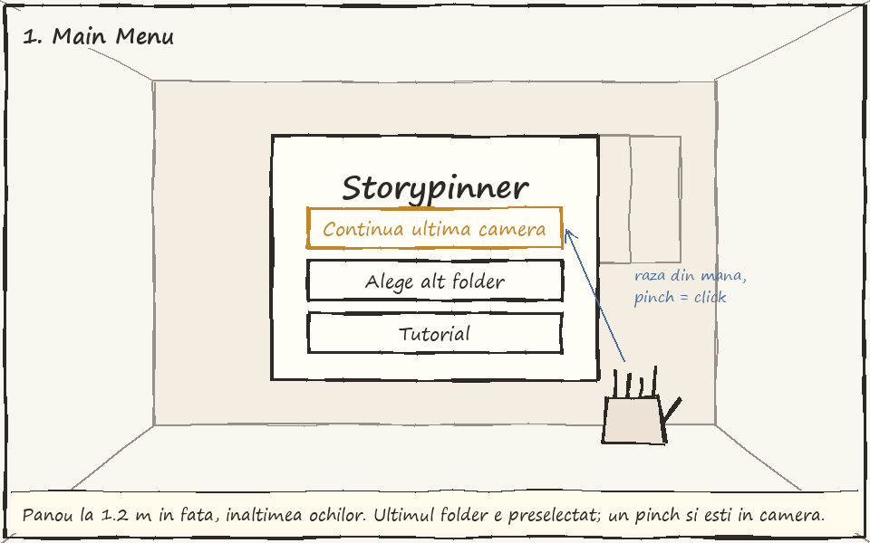
2. Raftul. Raftul sta langa birou. Fisierele de pe PC sunt pe tipuri (sertare); tragi una afara si devine card in camera.
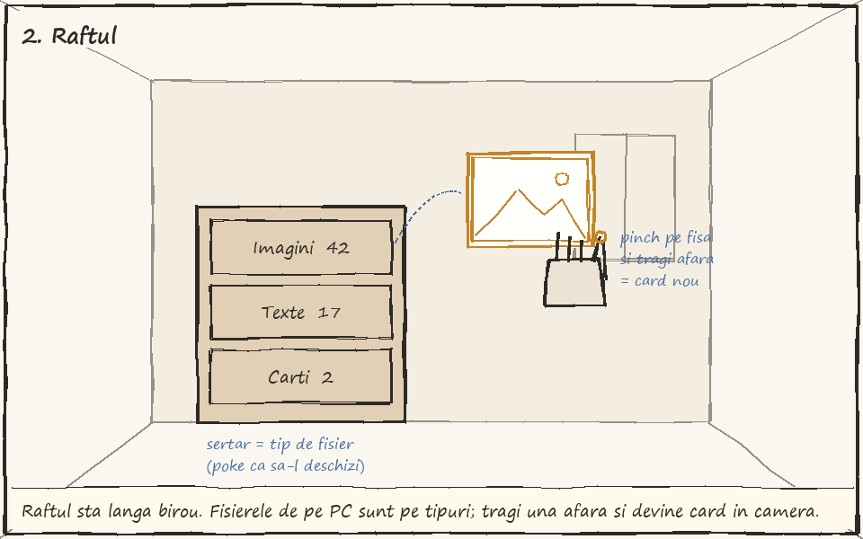
3. Lipire pe perete. Sub 15 cm de perete apare umbra si cardul se lipeste; lasat in aer, ramane plutind. Cu doua maini il mari (0.5x - 3x).
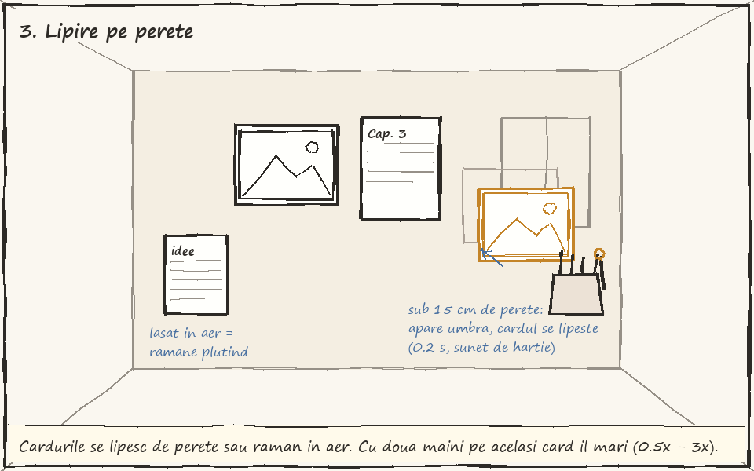
4. Firul. Pinch pe marginea cardului, tragi pana la urmatorul. Firul ramane legat si cand muti cardurile; mai multe fire fac un lant.
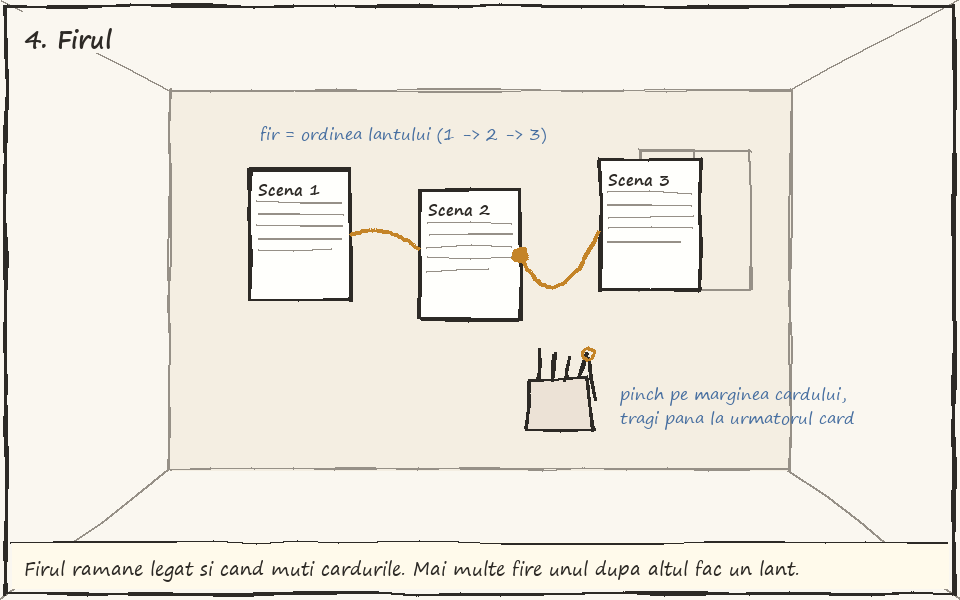
5. Dropdown-ul. Poke pe un fir selecteaza tot lantul; langa ultimul card apare lista de actiuni (* = prompturile mele).
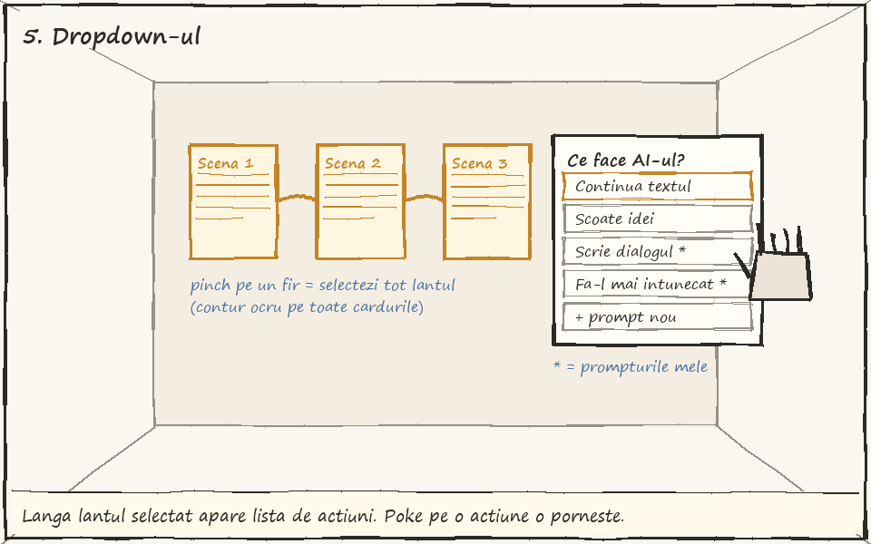
6. Asteptare. Firele pulseaza, mainile raman libere. Palma spre lant 1 s anuleaza; dupa 30 s apare "Incearca din nou".
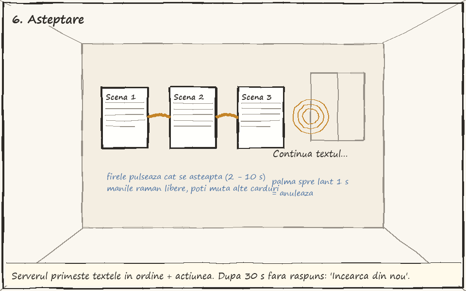
7. Trei drumuri. Trei ramuri semitransparente in evantai, cu titlu si inceputul textului; pinch tinut = citesti tot.
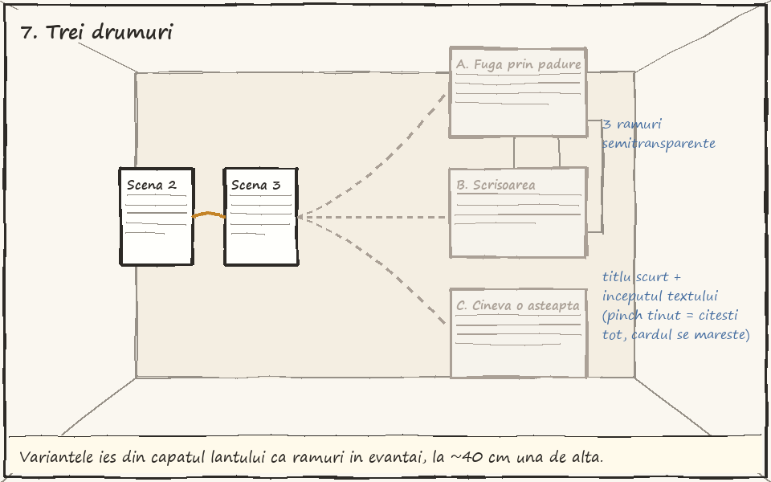
8. Alegi un drum. Pinch pe B il face card normal, legat de lant si salvat in fisierul de continuare; A se arunca cu palma.
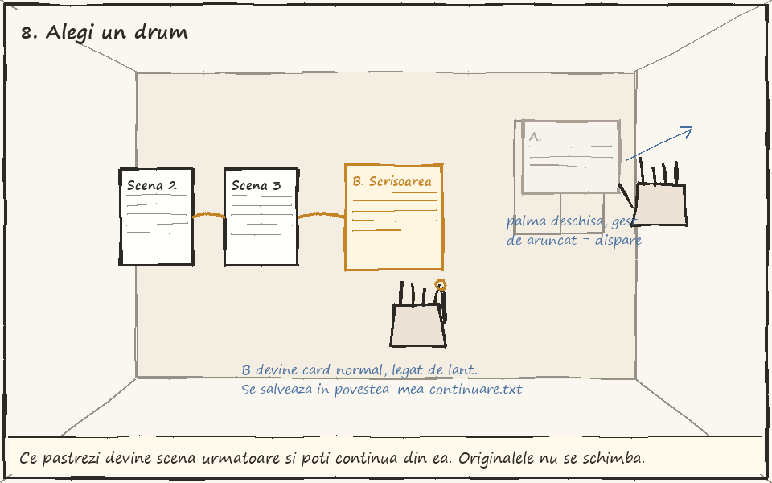
9. Imagine, taguri si +. Poke pe imagine: descrierea sub ea, tagurile in arc deasupra; + aduce sugestii.
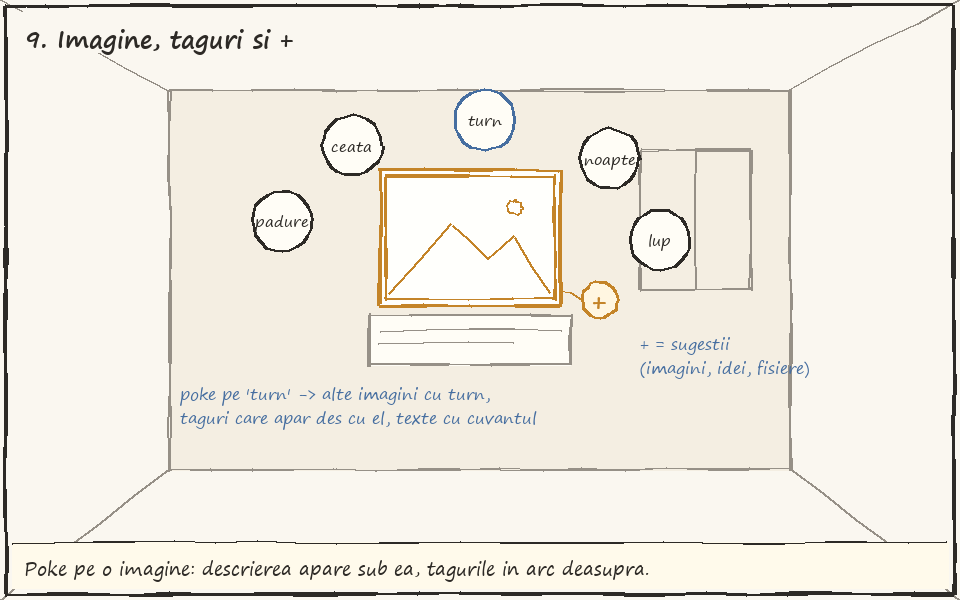
10. Cartea ca lant. Scenele ies din carte in ordine, deja legate, ca un drum prin camera.
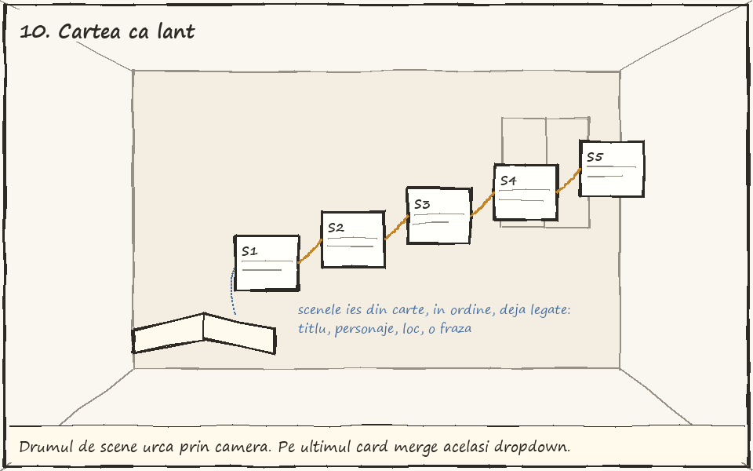
11. Planul camerei. Vedere de sus, la scara; referinta pentru graybox.
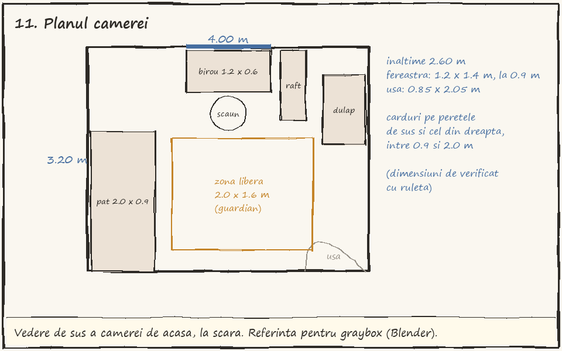
Planning Asset Creation (3p)
Legenda: subliniat = facut de mine de la zero; galben = generat cu AI; restul au linkul sursei. Toate asset-urile luate de afara sunt CC0 sau gratuite pentru proiecte.
3D
(Blender, ProBuilder, Kenney, Poly Haven, Sketchfab)
Graybox (acum, pentru testul de scara in VR):
- Camera de acasa: podea, tavan, 4 pereti, fereastra, usa (4.0 x 3.2 x 2.6 m, de masurat cu ruleta) - Blender, cutii simple
- Birou 1.2 x 0.6 x 0.75 m, scaun (sezut la 0.45 m), pat 2.0 x 0.9 x 0.45 m, dulap 1.0 x 0.6 x 2.0 m - cutii
- Raftul cu fisiere 1.0 x 0.35 x 1.2 m, 3 sertare intre 0.6 si 1.1 m inaltime (zona comoda pentru mana)
- Card imagine 0.30 x 0.225 x 0.01 m si card text 0.15 x 0.21 x 0.005 m (A5)
- Fisa mica din sertar 0.06 x 0.04 m
- Cartea 0.17 x 0.24 x 0.04 m si panoul de scena 0.40 x 0.30 m
- Dropdown: panou 0.25 m latime, randuri de 4 cm (tinta minima pentru poke cu degetul)
- Bula de tag (sfera 5 cm), butonul + (4 cm), firul (cilindru 4 mm)
Versiunea finala:
- Camera mea, modelata in Blender dupa dimensiunile reale, cu lumina calda coapta (baked lighting)
- Mobila principala: birou, pat, dulap, scaun (low-poly, dupa graybox)
- Rama cardului imagine (rama subtire de lemn) si foaia cardului text (hartie cu colt usor indoit)
- Raftul cu sertare, cu etichete pe fiecare sertar
- Cartea (coperta + pagini, se deschide cu o animatie simpla)
- Mobila si obiecte extra (rafturi, lampa, plante, covor): Kenney Furniture Kit - kenney.nl/assets/furniture-kit
- Plante si obiecte mici realiste: Poly Haven Models - polyhaven.com/models
- Obiecte mici de pe birou (cana, teanc de carti, suport de creioane) - Meshy (text to 3D), simplificate in Blender
- Mainile: Meta XR Interaction SDK (mainile din SDK) - Interaction SDK
- Variante extra de camera (atelier, biblioteca), daca e timp: Kenney + Poly Haven
Graphics & 2D
- UI: Main Menu, dropdown-ul, meniul de pe incheietura, mesajele de eroare (design propriu, dupa wireframe-uri)
- Conturul de hover/selectie al cardurilor (shader propriu, Shader Graph)
- Iconite (lupa, +, anuleaza, salveaza, sertare): Google Material Symbols - fonts.google.com/icons
- Font pentru carduri si UI: Atkinson Hyperlegible (citibil in VR) - Google Fonts
- Texturi: hartie, lemn, tencuiala, textil - Poly Haven - polyhaven.com/textures si ambientCG - ambientcg.com
- HDRI pentru lumina de seara de la fereastra: Poly Haven - polyhaven.com/hdris
- Iconita aplicatiei (pentru Quest) - generata cu AI, apoi curatata de mine
- Fisierele de continut: imaginile mele de referinta si capitolele cartii mele
- Folderul pentru studiu: 20 de imagini de pe Wikimedia Commons (licente libere) - commons.wikimedia.org + 6 texte scurte scrise de mine
Sounds
(freesound.org, Kenney, elevenlabs)
VFX
- Pulsul firului cat se asteapta (shader propriu pe LineRenderer)
- Ramurile care cresc din capatul lantului (animatie proprie, DOTween)
- Dizolvarea cardului aruncat (Shader Graph, dissolve)
- Umbra cardului pe perete cand e aproape (decal simplu)
- Particule mici care ies din fir cand apar sugestiile (Particle System)
- Praf in lumina de la fereastra: Unity Particle Pack - Asset Store
Alte asseturi